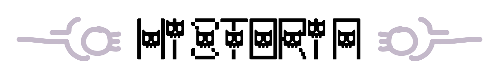
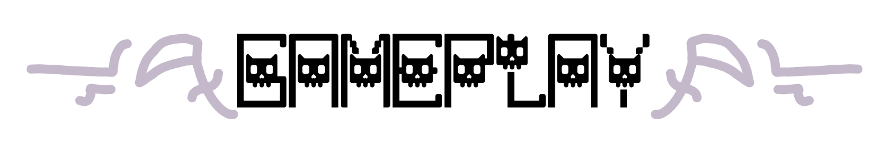
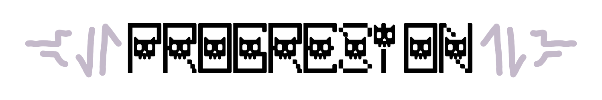

Título: Paw of the Death
Descripción: Paw of the Death es un rogue-like de plataformas 2D donde el gato de la muerte debe robarle el puesto
Grupo C - MoMo Studios
ATENCIÓN: Esta página simula la campaña de microfinanciación de un videojuego ficticio y no representa un producto real.
Práctica de Multimedia, 1º GDDV - Curso 22/23 (Quintana), URJC.
La URJC no se hace responsable del contenido expuesto por el autor.
-- El Juego --
Paw of the Death es un juego de acción plataformas en scroll lateral en el que el posicionamientos de enemigos y plataformas te pondrá a prueba a cada uno de sus 7 mundos, con enormes y cadavéricos bosses que no pensarías que pudiera vencer un gatete.
En Paw of the Death encarnas a "Patitas", el gato de la mismísima Muerte, que tras no recibir mimos suficientes decide miaurrebelarse contra su amo.
Abrete paso por todos los dominios funestos y plagados de enemigos de tu antiguo dueño y demuéstrale lo que vale una pezuña hasta robarle su puesto y dominar los circulos del infierno.
Será necesario investigar hasta el último recóndito lugar de todo el mundo conocido acaparando todo el poder necesario para destronar a tu antiguo dueño. También habrás de conquistar las mentes de sus vasallos y que así, cuando reclames el trono del inframundo, estén de tu parte.
-- Tiers --
- Fan de los Gatetes -
Por 10€ tendrás acceso a diarios de desarrollo mensuales y una clave del juego una vez completo.
- Amante de los Gatetes con guadaña -
Por 15€ tendrás acceso a todo lo anterior más acceso a versiones de desarrollo del juego.
- Gran amante de los Gatetes, en general -
Por 25€ tendrás acceso a todo lo anterior más tu nombre en una tumba dentro del juego.
- Me sobra el dinero y el amor por los Gatetes -
Por 35€ tendrás acceso a todo lo anterior más un peluche del gato protagonista.
- G.A.T.O.S. -
Por 50€ tendrás acceso a todo lo anterior más la banda sonora del juego en CD.
-- Stretch Goals --
- 35.000€ -
Juego financiado. El juego será lanzado en Steam.
- 50.000€ -
Paw of the Death estará disponible en Switch, siendo lanzado después de la versión de Steam.
- 55.000€ -
Se añadirá un modo Boss Rush extra al juego.
- 70.000€ -
Se añadirá un modo horda de supervivencia. ¡Aguanta todo lo que puedas!
- 90.000€ -
Paw of the Death será lanzado en PS5 y Xbox Series.